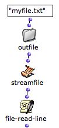
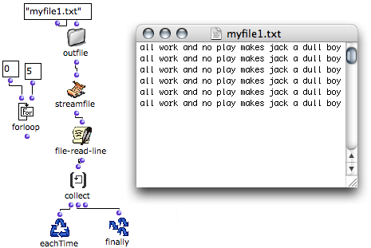

OpenMusic DocumentationHiérarchie de section : OM 6.6 User Manual > Visual Programming II > Files > File-Box > Reading / Writing
OpenMusic DocumentationHiérarchie de section : OM 6.6 User Manual > Visual Programming II > Files > File-Box > Reading / Writing
Navigation : page précédente | page suivante
Attention, votre navigateur ne supporte pas le javascript ou celui-ci à été désactivé. Certaines fonctionnalités de ce guide sont restreintes.
Reading and Writing Files
StreamFile : a Pointer to Read and Write Files
The StreamFile box represents the file to read or write during the File-Box process. It is attached to the file via its pathname.

|
It has one input and one output :
|
Actions and Formats
The properties of the StreamFile can be edited if needed.
To open the StreamFIle properties window, double click on the box.
- Three options are offered a the top of the window :
Read / Write,Write,Read. - The
File Typepop up menu offers two file formats : text or SDIF.

File Options
The File Exists pop up menu offers four options, which apply to the targeted file if it exists. Each of the different options determine the way the program behaves when the text file is open or created to access its contents and the choice of a destructive or non destructive action.
- " Rename " : the existing file is renamed and a new file is created.
- " Supersede " : the existing file is superseded; that is, a new file with the same name as the old one is created. The old file is deleted.
- " Overwrite " : the file is not deleted but modified with the input data. For instance, if an existing file contains ten lines, and that the new data represents three lines, the three first lines of the existing file are replaced.
- " Append " : the new data is added after the ending of the previous content of the file.
Writing Contents
File-Write
The file-write function writes something in the file. It has two inputs and one output:
|

|
File-Write-Line
The file-write-line function is similar to file-write, but adds a line return at the end of the input data.

Write 1001 times in the file – loop from 0 to 1000
To write several lines, an iterative process must be introduced in the program. Most of the time, each iteration triggers one operation in the File-Box loop.
Iterative File-Box Processes
Reading Data from a File
File-Read-Line
The file-read-line function allows to read one line in a file. It has one input and one output :
When all the lines of the text are exhausted, file-read-line returns "nil". |

|
Most of the time, each iteration triggers one operation. In this case, the successive lines can be stored with an accumulator such as collect, as in an OMLoop.

Reading and collecting the contents of the six first lines in a file – loop from 0 to 5.
Reading Files in Iterations
File-Eof-p
"Eof" stands for "end of file", "p" for "predicate". The file-eof-p function is a predicate, which tests if a streamfile is at the end of the file. It has one input and one output :
It can be associated with whileloop and OMIF, which execute a specific operation when the end of the file has been reached. Hence, this function allows to read a file whose number of lines is unknown. |
As long as the predicate finds no streamfile, it returns "nil", and lines are collected.
|
{kind=link}
Références :
Plan :
Navigation : page précédente | page suivante
A propos...(c) Ircam - Centre Pompidou